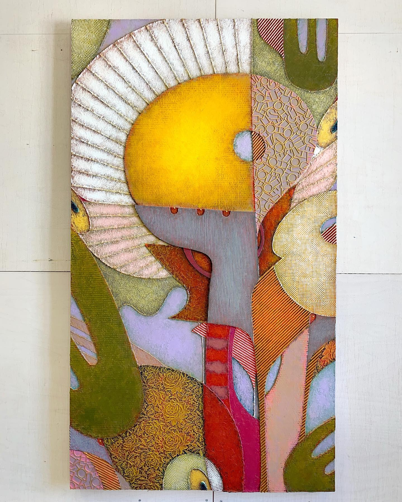

Произведение в разделе «Живопись и графика»
ДЕТИ СОЛНЦА. СЕРИЯ ЛОГОС.
ТЕХНИКА: мдф, живопись, смешанная техника - контуры, акрил, мастики, ткань, кружева, картон, металлические пудры, воск, патина.
ГОД: 2021.
РАЗМЕР: 160х90 см.
На нашей матушке Земле мы все так или иначе дети Солнца. Не только люди. И даже не столько люди. Например, цветы - гораздо более подходящие этому званию персонажи. Мы думаем, что цветы не умеют думать... но ведь это мы так думаем, а что думают сами цветы по этому поводу нам неведомо. Они гораздо старше нас homo и не исключено, что гораздо мудрее. Кто знает, быть может у них есть свой язык, своё искусство, своя религия. Быть может есть цветы-художники и цветы-поэты, которые поражают царство солнцепоклонников своими образами, передающимися в виде кодированных сообщений на уровне химического и полевого взаимодействия.